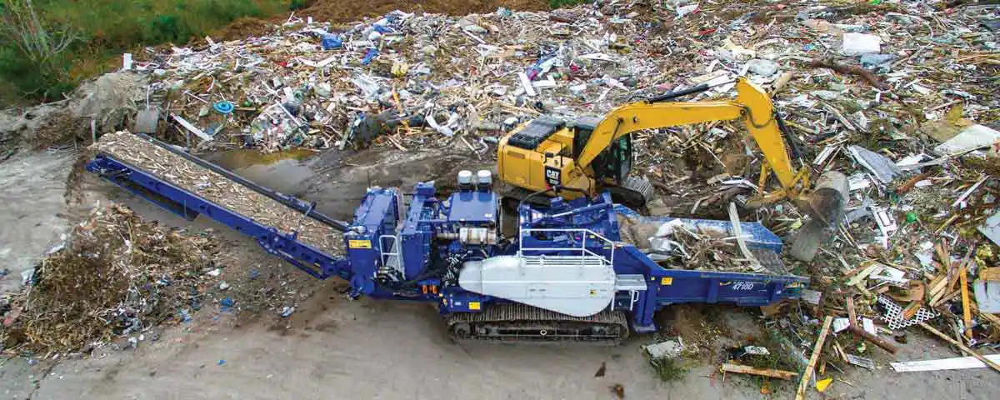
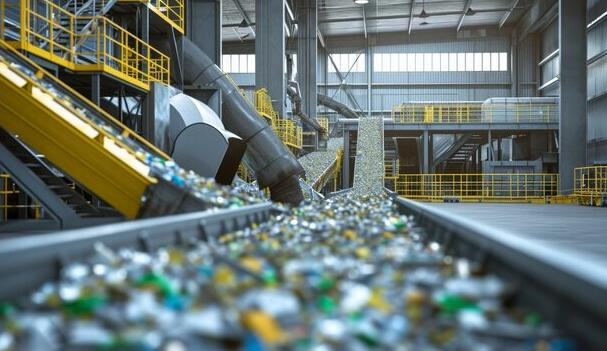
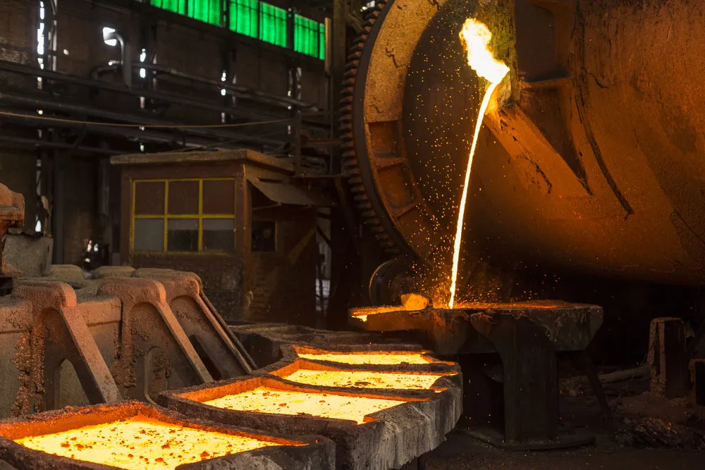
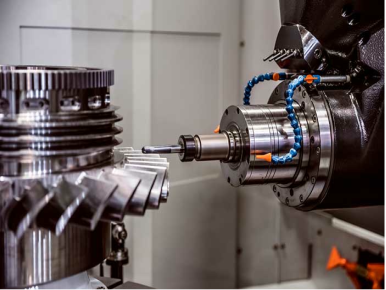
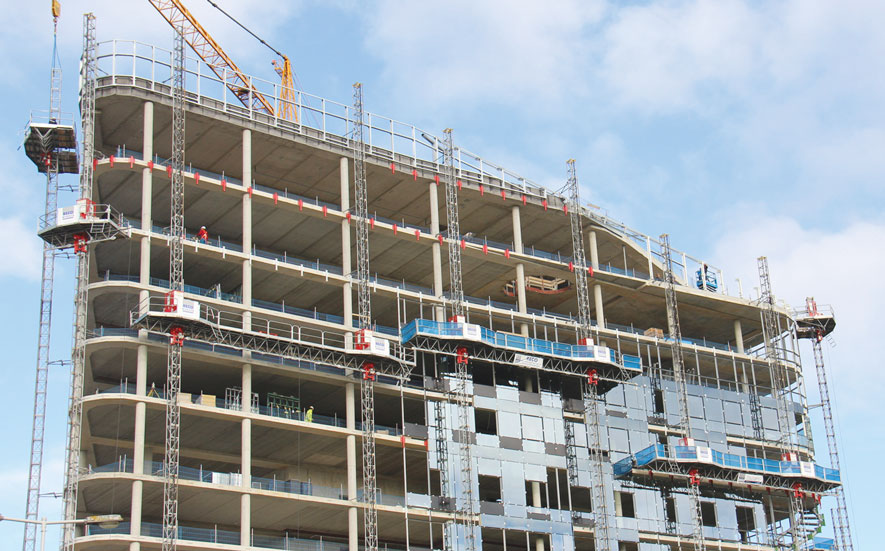

A structured workflow transforming urban debris into high-value architectural systems.
Our process bridges demolition sites and high-end architectural applications through a controlled, technology-driven pipeline. Each stage is designed to extract maximum value from discarded materials while ensuring structural integrity and design precision.
Construction and demolition waste is sourced directly from urban sites and contractors across the city.

Materials are categorized into brick, concrete, timber, and metal streams for efficient reuse.

Debris is cleaned, crushed, or reconditioned to meet structural and fabrication standards.

Using parametric tools, CNC cutting, and modular systems, materials are transformed into precise architectural components.

Final products are assembled on-site or off-site and installed as part of architectural systems.

Unlike linear construction systems, our model creates a continuous feedback loop where waste from one project becomes the resource for another. This circular logic reduces environmental impact while generating economic value through design.
Understand the System
From raw waste to built form — explore the process and be part of it.
Work With Us